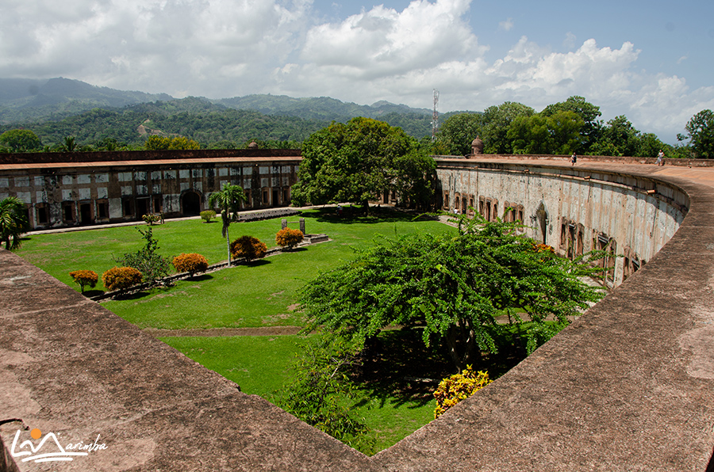
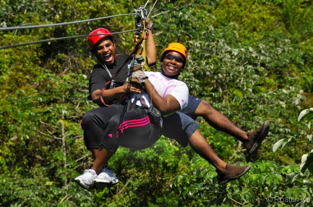
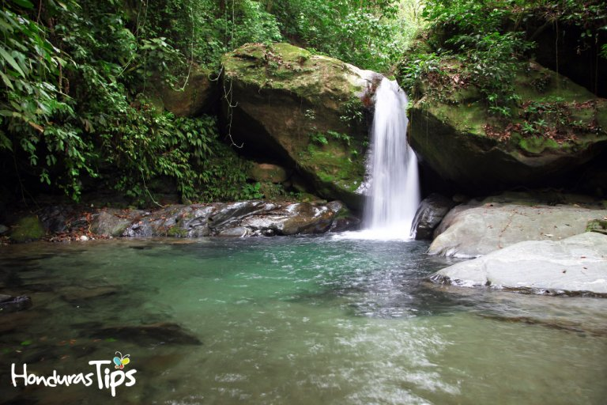

Let's Travel
El Castillo de Omoa
El Castillo de Omoa Conocida también como La Fortaleza de San Fernando de Omoa, aquí se encuentra en su interior un museo con diversas reliquias arqueológicas que hacen que el lugar sea considero la edificación más llamativa de la Costa Norte
Canopy Para los amantes de lo deportes extremos está el canopy, ubicado en Rawacalas Eco Aventuras, el lugar cuenta con una de las líneas de canopy mas extensas de Honduras, con un recorrido de al menos 700 metros de camino que te conducirán hasta el frondoso bosque tropical nublado de la sierra de Omoa.
Fuera de la autopista, en si a las afueras de Omoa, en El Paraíso hacia Cortés, en una reserva privada de Paraíso, ha establecido un Excursión combinada de 3 horas La excursión en canopy, o tirolina, constituye de siete cables y un puente tibetano. Una vez que su adrenalina disminuye, camina hacia una pequeña cascada y un pozo para refrescarse. Hay un rango de altura bastante amplio en la propiedad, lo que ha resultado en una maravillosa biodiversidad.
Omoa es una pequeña ciudad de playa ubicada en Honduras. Es famosa por sus relucientes playas que se extienden a lo largo del mar Caribe. Recuéstate en la arena blanca, y contempla los kilómetros y kilómetros de aguas azules frente a ti. Presta atención a las escuelas de delfines que suelen visitar el puerto. Explora las imponentes ruinas de piedra del Castillo de San Fernando. Construido por los españoles en la última etapa del siglo XVIII, la fortaleza fue diseñada para proteger a la ciudad de los ataques piratas y las invasiones extranjeras. Más adelante, la fortaleza fue utilizada como prisión.Hoy día, puedes explorar el sitio y obtener más información al respecto en el museo ubicado junto a la fortaleza.